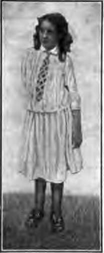

Chapter XV. The Muscles And Exercise
Description
This section is from the book "The Human Body And Health", by Alvin Davison. Also available from Amazon: The Human Body and Health.
Chapter XV. The Muscles And Exercise
Muscles Forming The Lean Meat
The rich red .t, called beefsteak, is made of muscle. The muscle . person looks just like the muscle of a cow. All lean ,t is muscle. With the exception of the bones, skin, digestive organs, the body is composed chiefly of mus-with blood vessels and nerves running through it. j muscle substance is not one undivided mass, but is le of about 500 distinct parts, each of which is known muscle.
He Nature Of A Muscle
A muscle is made of fine ads called fibers. se are held to-ler by a fine, web connecting tis-The muscle s are made to ten and thicken n order sent to n through the es. When the irs become ter this makes whole muscle ter. The short-g of a muscle is contraction and the lengthening of known as the relaxing.
Fig. 100. Fine threads of fibers forming a muscle. Much enlarged.
When a muscle has one end fixed at the shoulder and the other end fastened to a bone of the forearm the shortening or contraction of the muscle pulls the forearm upward. In a similar way, the movements of the fingers, legs and toes are produced by the contraction of various muscles.
Fig. 101. Showing how the muscle thickens when it shortens to draw up the arm. a and 6, muscle. The bones are in black.
Fig. 102. The extensor muscles on the Lack of the forearm. Note the tendons at the wrist. From a photograph.
Arrangement Of Muscles
Both ends of a muscle are not attached to the same bone, but each end is fixed to a different bone, so that a contraction of the muscle must move one of the bones. So some of the muscles extend from the humerus to the fingers, and others from the hip bone to below the knee.
Fig. 103. Muscles on the front of the arm. Note the white cords, the tendons at the wrist.
The muscles act like levers. That is one part of the bone, usually the end or a place near the end, is held fast in a joint, while the muscle is fixed to another part. The triceps muscle is fixed to the elbow end of the ulna, and pulls it up so as to force the other end down, as when one strikes the hand on the table. Pulling on the biceps muscle attached in front of the elbow brings the forearm up. Notice that this muscle grows thicker as it shortens.
Very often the muscle fibers are not fixed directly to the bone, but to a cord of tough white fibers, called a tendon which is joined to the bone. The hard cords felt in the wrist, when the fingers are moved, are tendons. On the back of the hand, three or four tendons may also be felt, and the skin seen to be pushed out by them when the fingers are worked. The largest is the tendon of Achilles, attached to the heel bone.
Kinds Of Muscles
The muscles forming the lean meat are called voluntary muscles, because one can move them whenever he wishes. Another set of muscles is named involuntary, because the will has no control over them.
These muscles help form the walls of nearly all tubes in the body. They regulate the size of the blood vessels and cause the movements of the stomach and the intestines.
The involuntary muscles are made of short, spindle shaped cells. The alcohol drinker cannot prevent the lengthening of these muscles in the blood vessels of the skin, causing it to become red. No one can prevent the movement of these muscles in the stomach after food enters, nor can one stop the beating of the heart. These muscles are made to act by a set of nerves called sympathetic, which do not obey our will.
Kinds Of Voluntary Muscles
There are two chief kinds of voluntary muscles. One kind is called flexor muscles because they bend a limb, while the other is known as extensor muscles because they straighten a limb. Several flexor muscles lie on the palm side of the hand and arm, and also on the back of the leg. Important extensor muscles lie on the back of the hand and arm, and on the front of the leg. Flexor muscles bend the fingers, arms, legs, and toes, and extensor muscles pull them straight.
Fig. 104. Muscles of the leg showing how they pass into tendons at the ankle.
Fig. 105. Using the pouting muscles.
Fig. 106. Using the muscles for a pleasant expression.
Muscles Of Expression
The score of muscles controlling the eyes, mouth and other features of the face are the muscles of expression. On their action depends largely whether one has a pleasing or ugly countenance. In one who is accustomed to pout, frown or cry about every trifle or annoyance, the muscles become so trained to pulling down the corners of the mouth, pushing out the lips, and wrinkling the forehead, that the face can never have a pleasant look.
Need Of Exercise
To exercise the muscles means to use them. No boy or girl can have a strong, well formed body unless the muscles are exercised. Every time a muscle is moved, the vessels in it enlarge and allow more blood to flow with the food to make the muscle grow.
Continue to: